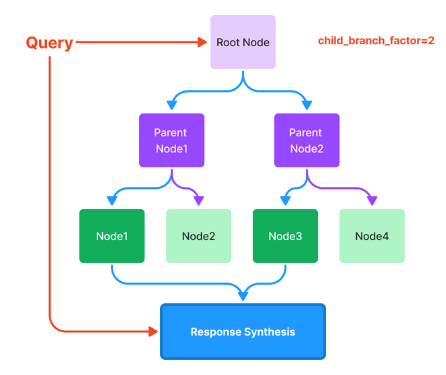
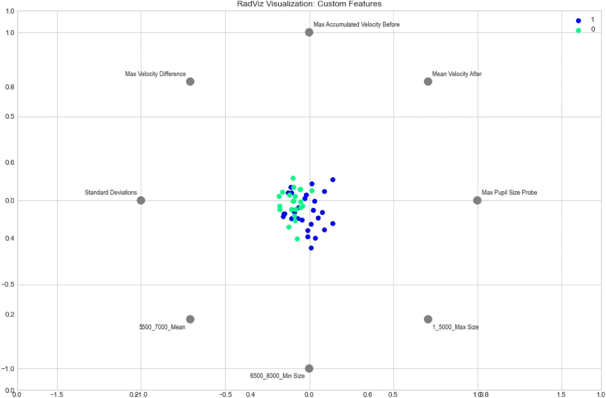
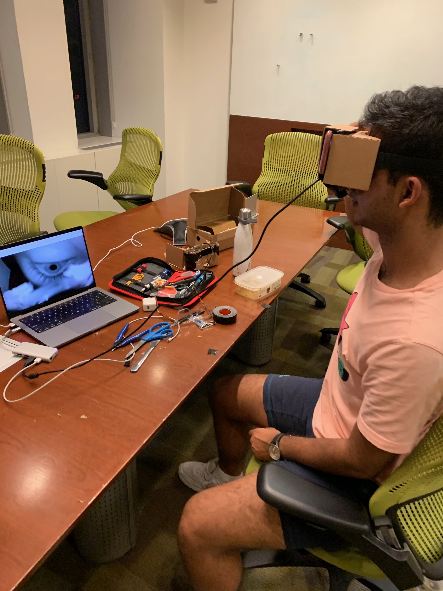

|
Shubh Khanna Email / Twitter / Linkedin / Scholar I'm a graduating M.S./B.S. student at Stanford studying computer science and math. Most of my prior work is in real-time visual decoding and in generative diffusion models. I'm on a 6-month term with FAIR, and have in the past done diffusion research at Pika . At Stanford, I work with the the Vision and Learning Lab (Fei-Fei Li, Ehsan Adeli) , as part of Stanford Artificial Intelligence Laboratory (SAIL). Previously, I've built Ocular Diagnostics, a VC-backed brain health startup. We used eye movements to monitor the onset of neurobehavioral disorders. In the past, I've:
Some of my most fun side projects:
|

|
Publications |
|

|
RAPTOR: Recursive Abstractive Processing for Tree-Organized Retrieval
Parth Sarthi, Salman Abdullah, Aditi Tuli, Shubh Khanna, Anna Goldie, Christopher Manning International Conference on Learned Representations (ICLR), 2024 SOTA performance on retrieval for language models. |

|
A Robust Machine Learning Based Framework for the Automated Detection of ADHD Using Pupillometric Biomarkers and Time Series Analysis
William Das, Shubh Khanna (equal contribution) Nature Scientific Reports, 2021 Illustrated features most pertinent to ADHD, built Naive Bayes classifier. |
|
-->

|
A Novel Application for the Efficient and
Accessible Diagnosis of ADHD Using Machine
Learning
William Das, Shubh Khanna (equal contribution) IEEE/ITU International Conference on Artificial Intelligence, 2020 Real-time filtering algorithms and hough methods for pupil extraction. |
|

|
A Novel Pupillometric-Based Application for the Automated Detection of ADHD Using Machine Learning
William Das, Shubh Khanna (equal contribution) ACM International Conference on Bioinformatics, Computational Biology, and Health Informatics, 2020 ML pipelines to work with continuous time series data, segmenting eye features to diagnose ADHD. |
Readings That
|
Max Hodak: The Vanishing Computer
Meta AI: Reconstructing Vision from MEG Milan Citkovic: Neurotechnology is Critical for AI Alignment |
|
© Shubh Khanna, 2023. |